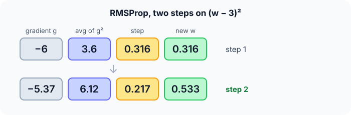

Prerequisites
- Gradient descent.
- Exponential moving averages.
- Square roots.
The analogy
Everyday analogy
Think of a driver adjusting speed to the road: on a bumpy, steep stretch they slow right down; on a smooth, gentle one they speed up. They judge "bumpy" from how rough the last few hundred metres felt.
RMSProp does that for each weight: it remembers how large the recent gradients were and divides the step by that typical size.
How it works
Update rule: $s \leftarrow \rho s + (1 - \rho) g^2$, then $w \leftarrow w - \eta \, g / (\sqrt{s} + \varepsilon)$, with decay $\rho \approx 0.9$ and $s$ starting at 0.
Start with two steps by hand
$f(w) = (w - 3)^2$, start $w = 0$, $s = 0$, $\eta = 0.1$, $\rho = 0.9$. Predict, then open "Check".
Example: predict before you read
Step 1. Step 1: gradient and the running average $s$.
Check
$g = -6$; $s = 0.9 \cdot 0 + 0.1 \cdot 36 = 3.6$.
Step 2. Cover the next line and guess: the step and new $w$.
Check
Step $= 0.1 \cdot (-6)/\sqrt{3.6} \approx -0.316$, so $w \approx 0.316$.
Step 3. Step 2: $g = 2(0.316 - 3)$. Predict $s$ and $w$.
Check
$g \approx -5.37$; $s = 0.9 \cdot 3.6 + 0.1 \cdot 28.8 \approx 6.12$; step $\approx 0.1 \cdot 5.37/2.47 \approx 0.217$, so $w \approx 0.533$.

Quick recall: Before reading further, cover the text above and say out loud: what does $s$ keep track of?
Check your answer
A running (exponentially weighted) average of the squared gradient, i.e. the typical size of recent gradients.
Finish the picture: per-weight scaling
Two weights with constant gradients $g_A = 10$ and $g_B = 0.1$, after many steps ($\rho = 0.9$).
- Running averages. Predict $s_A$ and $s_B$.
Check
$s \to g^2$: $s_A = 100$, $s_B = 0.01$.
- Effective steps. Predict $g/\sqrt{s}$ for each, and compare with SGD.
Check
Both $\approx 1$, so both weights step by about $\eta$. With SGD the steps would be $10\eta$ and $0.1\eta$, 100 times apart.
Quick recall: Without scrolling up, say out loud: which weight gets the bigger step, one with gradients around 10 or one with gradients around 0.1?
Check your answer
With constant gradients both get about $\eta / \sqrt{1 - \rho}$ times the sign; relative to SGD, the small-gradient weight gets a much bigger boost.
Full worked calculation
Five steps of RMSProp ($\eta = 0.1$, decay $\rho = 0.9$) on $f(w) = (w - 3)^2$ from $w = 0$. The update is $s \leftarrow \rho s + (1 - \rho) g^2$, then $w \leftarrow w - \eta\, g / \sqrt{s}$.
| Step | Gradient $g$ | $s$ | $\sqrt s$ | Step $-\eta g/\sqrt s$ | $w$ |
|---|---|---|---|---|---|
| 1 | −6 | 3.6 | 1.897 | +0.316 | 0.316 |
| 2 | −5.368 | 6.121 | 2.474 | +0.217 | 0.533 |
| 3 | −4.934 | 7.943 | 2.818 | +0.175 | 0.708 |
| 4 | −4.584 | 9.250 | 3.041 | +0.151 | 0.859 |
| 5 | −4.282 | 10.158 | 3.187 | +0.134 | 0.993 |
-
1Step 1: running average of g²
$$s = 0.9 \cdot 0 + 0.1 \cdot (-6)^2 = 3.6, \qquad \sqrt{s} = 1.897$$$s$ tracks the typical size of recent gradients, ignoring their sign. It starts at 0, so after one step it only holds 10% of 36.
-
2Step 1: normalised step
$$w = 0 - 0.1 \cdot \frac{-6}{1.897} = 0.316$$Dividing by $\sqrt{s}$ rescales the gradient to about unit size. Plain GD would have stepped 0.6; RMSProp steps 0.316 here because $s$ is still building up and is not yet $g^2$.
-
3Step 2
$$g = 2(0.316 - 3) = -5.368, \quad s = 0.9 \cdot 3.6 + 0.1 \cdot 28.81 = 6.121, \quad w = 0.316 + 0.1 \cdot \tfrac{5.368}{2.474} = 0.533$$$s$ keeps growing towards the true squared gradient (about 25–30), so the denominator grows and steps shrink.
-
4Steps 3–5
$$\text{steps: } 0.175, \; 0.151, \; 0.134 \quad\Rightarrow\quad w = 0.993$$Once $s \approx g^2$, each step is close to $\eta \cdot \text{sign}(g) = 0.1$. The step size no longer depends on how steep the slope is, only on its direction and on $\eta$.
-
5Why per-weight scaling helps
$$\text{weight A: } g = 100 \Rightarrow \text{step} \approx 0.1, \qquad \text{weight B: } g = 0.01 \Rightarrow \text{step} \approx 0.1$$Plain GD would move weight A 10,000 times more than weight B. RMSProp gives each weight its own scale, so steep directions don't explode and flat directions don't stall.
-
6The ε in practice
$$w \leftarrow w - \eta\,\frac{g}{\sqrt{s} + \varepsilon}, \qquad \varepsilon \approx 10^{-8}$$If a weight's gradients have been 0 for a while, $s \approx 0$ and the division would blow up. The tiny $\varepsilon$ prevents that and changes nothing otherwise.
What the numbers tell us
RMSProp divides each gradient by the root of its recent mean square, so every weight moves at roughly $\eta$ per step, whatever the gradient's scale.
Here it is slower than plain GD at first (0.99 vs 2.02 after 5 steps) because the slope is steep and simple; its strength is on losses where different weights have wildly different gradient sizes.
The rule in plain words
For each weight, keep a running average $s$ of its squared gradients.
Step by $\eta \, g / (\sqrt{s} + \varepsilon)$: the gradient's direction, normalised by its recent typical size.
Quick recall: Before you read the code, describe one RMSProp step, in your own words. Then check below.
Check your answer
Update the running average of the squared gradient, then move the weight by the learning rate times the gradient divided by the square root of that average.
The code
Read this code after you have done the two steps by hand. It will make more sense.
double rmsprop_run(double w, double lr, double rho, int steps) { /* minimise (w - 3)^2 */
double s = 0, eps = 1e-8;
for (int t = 0; t < steps; t++) {
double g = 2 * (w - 3);
s = rho * s + (1 - rho) * g * g; /* running mean of g^2 */
w -= lr * g / (sqrt(s) + eps); /* divide by the RMS */
}
return w;
}Definition
What you just did, in one line: RMSProp divides each weight's gradient by the root mean square of its recent gradients, $w \leftarrow w - \eta\, g/(\sqrt{s} + \varepsilon)$ with $s$ a running average of $g^2$.
flowchart LR
G["gradient g"] --> S["s = rho × s + (1 - rho) × g²"]
S --> R["RMS = √s"]
G --> U["w -= η × g / (RMS + ε)"]
R --> U
Putting numbers on it
Quick recall: Before looking at the formula, predict: what is "RMS" in RMSProp?
Check your answer
Root mean square: $\sqrt{s}$ is the root of the (running) mean of squared gradients.
The update and our first step:
$$s_t = \rho s_{t-1} + (1 - \rho) g_t^2, \qquad w_t = w_{t-1} - \eta \frac{g_t}{\sqrt{s_t} + \varepsilon}, \qquad \text{step 1: } 0.1 \cdot \frac{6}{\sqrt{3.6}} \approx 0.316$$| Method | Step for a weight with gradient $g$ | Effect |
|---|---|---|
| SGD | $\eta g$ | Proportional to the gradient size |
| AdaGrad | $\eta g/\sqrt{\sum g^2}$ | Steps shrink forever (sum keeps growing) |
| RMSProp | $\eta g/\sqrt{s}$, $s$ a running mean | Normalised, adapts to recent scale |
| Adam | RMSProp + momentum + bias correction | Usually the default |
Warning
Early on, $s$ starts at 0 and is too small, so the first steps can be bigger than intended (here 0.316 instead of 0.1). Adam adds bias correction to fix exactly this.
Exam tip
Contrast RMSProp with AdaGrad: AdaGrad sums all past squared gradients, so its steps eventually vanish; RMSProp uses a decaying average, so it keeps learning.
Common mistakes
- Forgetting $\varepsilon$, which divides by zero when $s$ is 0.
- Confusing $\rho$ (decay of the average) with the learning rate.
- Thinking RMSProp includes momentum; that's Adam.
Try it yourself
Exercise 1 (warm-up)
One RMSProp step with $g = 2$, $s = 0$ initially, $\rho = 0.9$, $\eta = 0.01$. Compute $s$ and the step.
Hint
$\sqrt{0.4} \approx 0.632$.
Answer
$s = 0.1 \cdot 4 = 0.4$; step $= 0.01 \cdot 2/0.632 \approx 0.032$.
Exercise 2 (a bit harder)
Why can AdaGrad stall on a long training run while RMSProp keeps going? Use a constant gradient $g = 1$. Write your answer down before you open it.
Show answer
AdaGrad divides by $\sqrt{\sum g^2} = \sqrt{t}$, so after 10,000 steps the step is 100 times smaller. RMSProp's $s$ stays around 1, so its step stays about $\eta$.
Did you know?
Did you know?
Geoffrey Hinton proposed RMSProp in a 2012 Coursera lecture, not in a paper; it is still often cited as "Lecture 6e".
RMSProp was popular for training recurrent networks and for DeepMind's Atari-playing agents in 2013–2015.
Key points to remember
If you remember one thing from each line, remember the because.
- RMSProp adapts the step per weight because each weight has its own running average of squared gradients.
- Large-gradient weights get smaller steps because their gradient is divided by a larger RMS.
- It keeps learning on long runs because its average decays, unlike AdaGrad's ever-growing sum.
- Early steps can be too big because $s$ starts at 0 without bias correction.
- Adam builds on it because adding momentum and bias correction to RMSProp gives Adam.
Self-check questions
Answer these in order, out loud. They follow the page, so your answers become the script of your video.
- How is RMSProp like a driver adjusting speed to the road?
Sample answer
On bumpy, steep stretches (large recent gradients) it takes small steps; on smooth ones it takes larger steps.
- Do the first RMSProp step on $(w - 3)^2$ from 0 with $\eta = 0.1$, $\rho = 0.9$.
Sample answer
$g = -6$, $s = 3.6$, step $\approx -0.316$, so $w \approx 0.316$.
- Why does the code add
epstosqrt(s)?A good answer mentions zero.
Sample answer
If $s$ is 0 (or tiny), dividing by $\sqrt{s}$ would blow up; $\varepsilon$ keeps the step finite.
- So what is RMSProp, in one sentence?
Sample answer
An optimiser that divides each weight's gradient by the root mean square of its recent gradients.
- Why does RMSProp equalise step sizes across weights?
A good answer uses $g/\sqrt{s}$.
Sample answer
With consistent gradients, $s \approx g^2$, so $g/\sqrt{s} \approx \pm 1$ for every weight, whatever its gradient scale.
- How does RMSProp differ from AdaGrad and from Adam?
Sample answer
AdaGrad uses a growing sum of squared gradients, so steps vanish; Adam adds momentum and bias correction to RMSProp.
- Why was the first step 0.316 rather than 0.1?
Sample answer
Because $s$ started at 0, so after one step it was only 10% of $g^2$, making $\sqrt{s}$ too small.
- If you had to teach this to a friend in 2 minutes, what would you leave out, and why?
Sample answer
I'd leave out AdaGrad and the bias issue. I'd keep the driver analogy, the first step ($s = 3.6$, step 0.316), and "divide each gradient by its recent typical size".
External resources
- PyTorch docs: torch.optim.RMSprop: the update rule and options.
- Stanford CS231n: Adaptive learning rates: AdaGrad, RMSProp and Adam.
- Hinton's lecture 6 slides: where RMSProp was introduced.
Videos
- YouTube search: RMSProp explained: pick a short visual explanation.